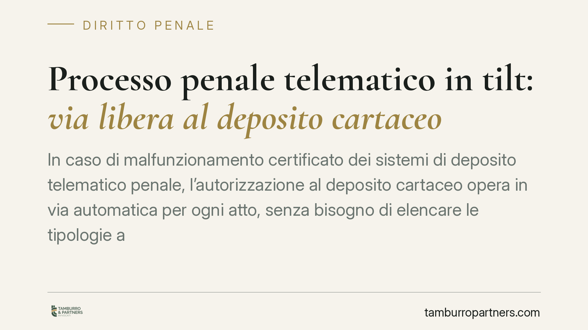

Processo penale telematico in tilt: via libera al deposito cartaceo
In caso di malfunzionamento certificato dei sistemi di deposito telematico penale, l'autorizzazione al deposito cartaceo opera in via automatica per ogni atto, senza bisogno di elencare le tipologie ammesse. Un principio che tutela l'effettività della difesa quando la tecnologia cede. Vediamo cosa significa per avvocati e parti processuali e come muoversi in concreto.

Il fatto
Quando il sistema di deposito telematico penale va in tilt, l'avvocato resta con un atto da depositare e nessun canale che funziona. La domanda pratica è semplice: posso tornare alla carta? E per quali atti?
La risposta, secondo l'orientamento emerso in sede di legittimità, è che l'autorizzazione al deposito cartaceo – una volta certificato il malfunzionamento – copre ogni atto, senza che occorra specificare di volta in volta le tipologie di documenti ammessi. Il presupposto è il disservizio accertato, non la natura del singolo atto.
*(Nota redazionale: gli estremi della pronuncia richiamata dalla fonte – sezione, numero e anno – sono in corso di verifica; riferiamo il principio di diritto, non l'identificativo della sentenza.)*
Inquadramento normativo
La disciplina del processo penale telematico è contenuta nell'art. 111-bis c.p.p., introdotto dalla riforma Cartabia (d.lgs. n. 150/2022). La norma fissa la regola generale del deposito con modalità telematiche e demanda alla normativa attuativa la definizione delle specifiche tecniche e dei casi di deroga.
Il punto decisivo riguarda i disservizi. In caso di malfunzionamento dei sistemi, la disciplina regolamentare e i provvedimenti della Direzione Generale per i Sistemi Informativi Automatizzati (DGSIA) del Ministero della Giustizia prevedono la certificazione del malfunzionamento: è questo atto a sbloccare le modalità di deposito alternative, cartacee comprese.
La lettura di legittimità valorizza proprio questo meccanismo. Il presupposto che legittima il ritorno alla carta è il disservizio certificato, non una valutazione sul singolo documento. Di conseguenza, l'autorizzazione non va frazionata per categorie di atti: se il sistema non funziona e il malfunzionamento è certificato, il deposito cartaceo è ammesso in quanto tale.
Implicazioni pratiche
Per il difensore il principio riduce un rischio concreto: quello di vedersi contestare la ritualità di un deposito cartaceo perché l'atto non rientrava in un elenco predefinito. Se il presupposto è il malfunzionamento certificato, cade l'argomento formalistico che pretenderebbe un'autorizzazione "per tipologia".
Resta centrale, però, l'onere di documentare il disservizio. L'ammissibilità del cartaceo non è un ripiego spontaneo: dipende dalla certificazione del malfunzionamento secondo i provvedimenti DGSIA. Senza quel presupposto accertato, il deposito cartaceo torna a essere irrituale.
L'effetto pratico è duplice. Da un lato, maggiore certezza quando il sistema cede in prossimità di una scadenza. Dall'altro, un dovere di diligenza: tracciare il disservizio e conservarne prova diventa parte integrante dell'attività difensiva.
Cosa fare in concreto
- Verifica e documenta il malfunzionamento. Al primo errore di sistema, acquisisci subito screenshot con data e ora, codici di errore e ogni evidenza del disservizio.
- Controlla la certificazione DGSIA. Accerta se il malfunzionamento è stato ufficialmente certificato dai canali ministeriali: è il presupposto che legittima il deposito cartaceo.
- Predisponi il deposito cartaceo tempestivo. Non attendere il ripristino se la scadenza incombe. Deposita in forma cartacea presso la cancelleria competente, allegando la documentazione del disservizio.
- Richiama la disciplina corretta. Nella nota di deposito fai riferimento all'art. 111-bis c.p.p. e ai provvedimenti attuativi DGSIA sul malfunzionamento certificato, non a norme estranee alla materia telematica.
- Conserva il fascicolo probatorio del disservizio. Tieni traccia di tutto fino a esito definitivo: in caso di eccezione sulla ritualità, quella documentazione è la tua prima linea di difesa.
Una lettura di sistema
Il principio si colloca sul crinale tra effettività della difesa e formalismo. La digitalizzazione del processo penale è un progresso, ma non può trasformarsi in una trappola procedurale quando l'infrastruttura tecnica non regge.
Ancorare l'ammissibilità del cartaceo al malfunzionamento certificato – e non alla tipologia di atto – significa spostare il baricentro dove deve stare: sul fatto oggettivo del disservizio, non su una tassonomia di documenti. È una lettura che protegge il diritto di difesa senza aprire scorciatoie, perché il presupposto resta un accertamento ufficiale.
In un sistema che si fa sempre più digitale, la tenuta delle garanzie si misura proprio su questi snodi: cosa accade quando la tecnologia si ferma.
---
*Contributo informativo a cura di Tamburro & Partners – Avv. Giuseppe Tamburro. Non costituisce parere legale.*
Ogni condominio ha una storia a sé.
Se gestisci un'amministrazione e vuoi un confronto su una specifica questione condominiale, scrivi allo studio. Ti rispondiamo entro un giorno lavorativo.